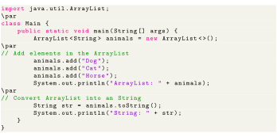

To convert an array list into a String, we can use the toString() method. For example,

Output
![\begin{lstlisting}
ArrayList: [Dog, Cat, Horse]
String: [Dog, Cat, Horse]
\end{lstlisting}](img239.svg)
toString() converts the whole array list into a single String. Other ArrayList Methods:
- clone() & Creates a new array list with the same element, size, and capacity.
- contains() & Searches the array list for the specified element and returns a boolean result.
- ensureCapacity() & Specifies the total element the array list can contain.
- isEmpty() & Checks if the array list is empty.
- indexOf() & Searches a specified element in an array list and returns the index of the element.
- trimToSize() & Reduces the capacity of an array list to its current size.